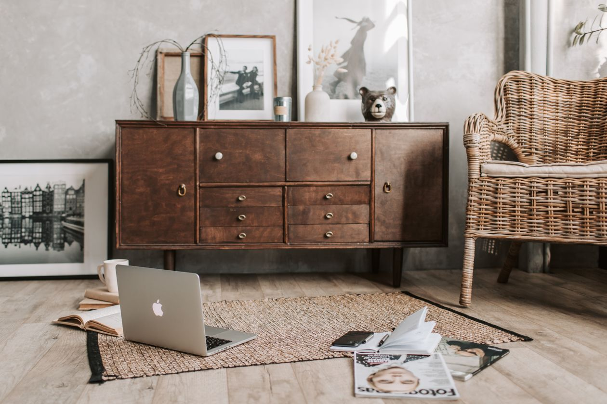

The Reader
Nine years of fitting out shops, then the plans themselves
I spent nine years as an interior designer fitting out shops and flats in Singapore — the work where you learn what a doorway does to a queue, and what a badly placed counter does to a Saturday. Clients kept asking why one unit thrived and its identical neighbour didn't, and the honest part of the answer kept being the layout. So I went and learned to read it properly.
I trained in the form school with a teacher in Penang — the older of the two schools, the one that reads land, doors, light and the shape of rooms before it touches a compass. Fourteen years on, I read plans from a desk in Tiong Bahru: mostly Singapore, mostly flats and small shops, and every October the New Year diary fills the desk.
Plainly stated, again: feng shui is a traditional practice. My clients choose it for their own reasons — a shop that feels wrong at the till, a flat that never settled. I advise on layout. That is the whole of the claim, and it is enough to be useful.

Two Schools, Stated Plainly
Form first, compass second
Form school reads what can be seen: the door, the light, the route through the rooms, what stands behind your chair. Compass school reads directions and dates against the building's facing and the occupants' birth years, and lays the bagua by the compass instead of the door.
I was trained in form school and I practise it first. I take the compass reading too — it goes on every report, labelled as compass school where it is used — and where the two disagree, furniture wins: the correction you can see and move beats the one you can only calculate. My reports say which school each note comes from. A consultant who won't tell you which school they're reading from is reading from neither.
How Corrections Are Ranked
Free, then cheap, then never mine
- Free: move the furniture, clear the centre, turn the desk, take the mirror down. Most readings end here.
- Cheap: a threshold rug, a plant, a lamp, one wall repainted in an element's colour. A trip to the hardware shop, not a catalogue.
- Never mine: drains, beams, cracks, damp, subsidence. These go to a licensed surveyor or engineer, first and in writing. I do not sell a cure for a beam; I tell you to move the bed.
The plastic wealth frog, sold by the kilo in the festival markets, has never once paid a shop's rent. I don't sell frogs, mirrors, crystals or cures — and a reading that ends with a shopping list was a sales call wearing a reading's clothes.
What I Will Not Do
The short list, in the open
- No promises about wealth, health, luck, fertility, promotions or examination results. The practice does not carry them and neither do I.
- No objects sold, no annual packages, no "activation" visits. The fee table on the home page is the whole price list.
- No reading over a structural problem. Surveyor first, in writing — then the plan, gladly.
- No mirror hung facing a front door, whatever the previous tenant believed.
Begin
One form, one answer
Send the plan and the door direction if you have it. I answer within two working days, and the first answer says honestly whether a reading is the right tool.
Or write directly: hello@sulinteo.example